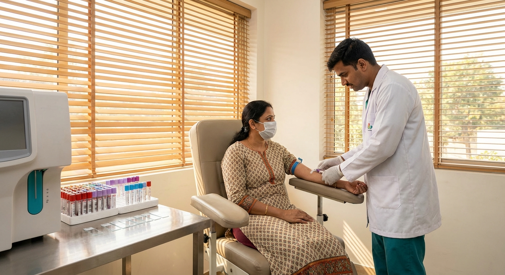

Your fasting blood sugar came back "normal" at 95 mg/dL. You feel fine. No symptoms. So you're safe, right?
Not necessarily. Fasting blood sugar is a snapshot of one moment. Your body could be running high blood sugar for hours after every meal — silently damaging your kidneys, eyes, nerves, and heart — while your fasting number looks perfectly fine.
That's why the HbA1c test (also called glycated hemoglobin or glycosylated hemoglobin) exists. It gives you the average blood sugar picture over the past 2–3 months. No fasting required. No time-of-day restrictions. One blood draw, and you know exactly where you stand.
In India — with 101 million diabetics and 136 million prediabetics — this test should be as routine as a blood pressure check. Yet most Indians have never heard of it, or confuse it with regular fasting sugar tests.
This guide covers everything: what HbA1c means, the exact normal/prediabetes/diabetes ranges, how much it costs across Indian labs, and — most importantly — 10 proven ways to lower your HbA1c naturally using Indian diet and lifestyle strategies.
📋 What's Inside
- What Is HbA1c? (Plain English)
- Why HbA1c Matters More Than Fasting Sugar
- HbA1c Ranges: Normal vs Prediabetes vs Diabetes
- HbA1c Test Cost in India (2026 Price Comparison)
- How to Prepare for the Test
- When HbA1c Can Be Misleading
- 10 Proven Ways to Lower HbA1c Naturally (Indian Strategies)
- How Often Should You Test?
- Free Tools to Track Your HbA1c
- FAQs
1. What Is HbA1c? (Plain English)
HbA1c stands for Hemoglobin A1c. Here's the simple version:
Your red blood cells contain hemoglobin — the protein that carries oxygen. When sugar (glucose) floats around in your blood, some of it sticks to hemoglobin. The more sugar in your blood, the more gets stuck. This sugar-coated hemoglobin is called glycated hemoglobin — or HbA1c.
Red blood cells live for about 90–120 days. So the HbA1c test measures how much sugar has accumulated on your hemoglobin over the past 2–3 months. It's like a report card of your average blood sugar control — not a single exam score, but the semester GPA.
2. Why HbA1c Matters More Than Fasting Sugar
Most Indians only check fasting blood sugar (FBS). Here's why that's dangerously incomplete:
| Factor | Fasting Blood Sugar | HbA1c |
|---|---|---|
| What it measures | Blood sugar at one point in time | Average blood sugar over 2–3 months |
| Fasting required? | Yes (8–12 hours) | No |
| Affected by yesterday's meal? | Yes | No |
| Catches post-meal spikes? | No — can miss them entirely | Yes — reflects overall glucose exposure |
| Stress/illness impact? | High — can be falsely elevated | Low — averaged over months |
| Best for | Quick screening | Diagnosis + ongoing management |
3. HbA1c Ranges: Normal vs Prediabetes vs Diabetes
Both the American Diabetes Association (ADA) 2026 Standards of Care and ICMR guidelines use these cutoffs:
✅ Normal: Below 5.7% (Below 39 mmol/mol)
Your average blood sugar over 3 months is healthy. Keep doing what you're doing. Get retested annually after age 25 (especially with family history).
Equivalent average blood sugar: Below ~117 mg/dL
⚠️ Prediabetes: 5.7% – 6.4% (39–47 mmol/mol)
Your blood sugar is higher than normal but not yet diabetic. This is the critical intervention window. Without lifestyle changes, 30–50% of prediabetics develop full diabetes within 5 years. With aggressive changes, you can reverse this.
Equivalent average blood sugar: ~117–137 mg/dL
🔴 Diabetes: 6.5% or Higher (48+ mmol/mol)
This confirms diabetes. Your doctor will likely order a repeat test to confirm, then discuss medication and management. The target for most diabetics is to keep HbA1c below 7.0% (ADA/ICMR recommendation).
Equivalent average blood sugar: 140 mg/dL and above
HbA1c to Average Blood Sugar Conversion
| HbA1c (%) | Average Blood Sugar (mg/dL) | Status |
|---|---|---|
| 5.0 | 97 | ✅ Normal |
| 5.5 | 111 | ✅ Normal |
| 5.7 | 117 | ⚠️ Prediabetes starts |
| 6.0 | 126 | ⚠️ Prediabetes |
| 6.4 | 137 | ⚠️ High prediabetes |
| 6.5 | 140 | 🔴 Diabetes |
| 7.0 | 154 | 🔴 Target for most diabetics |
| 8.0 | 183 | 🔴 Poorly controlled |
| 9.0 | 212 | 🔴 Very poorly controlled |
| 10.0 | 240 | 🔴 Dangerous — urgent action needed |
4. HbA1c Test Cost in India (2026 Price Comparison)
The HbA1c test is affordable and widely available across India. Here's what major labs charge in 2026:
| Lab / Platform | HbA1c Test Price (₹) | Home Collection | Report Time |
|---|---|---|---|
| Thyrocare | ₹199 – ₹368 | ✅ Free | 24–48 hours |
| Dr Lal PathLabs | ₹350 – ₹450 | ✅ Free | 24 hours |
| SRL Diagnostics | ₹880 | ✅ Free | 24 hours |
| Metropolis | ₹400 – ₹550 | ✅ Free | 24 hours |
| Redcliffe Labs | ₹250 – ₹350 | ✅ Free | 12–24 hours |
| Orange Health | ₹300 – ₹400 | ✅ Free | 6–12 hours |
| Government Hospital | ₹50 – ₹150 | ❌ Walk-in | 1–3 days |
- Book through aggregators like 1mg, PharmEasy, or Healthians for 20–40% discounts
- Bundle HbA1c with fasting sugar + lipid panel for a diabetes health package (often cheaper than individual tests)
- Government hospitals and CGHS-empanelled centres charge ₹50–150
- Many corporate health insurance plans cover preventive HbA1c testing
5. How to Prepare for the Test
This is the best part: no preparation needed.
- No fasting required — eat and drink normally
- No time restriction — get tested morning, afternoon, or evening
- No dietary changes — your last meal doesn't affect results
- Takes 2 minutes — standard blood draw from your arm
- Anemia or iron deficiency
- Thalassemia trait (common in India — 3–4% of Indians carry it)
- Recent blood loss or blood transfusion
- Kidney disease
- Pregnancy (HbA1c is less reliable — use OGTT instead)
6. When HbA1c Can Be Misleading
HbA1c is excellent but not perfect. Here are situations where it may give inaccurate results:
Falsely Low HbA1c (looks better than reality)
- Iron-deficiency anemia — very common in Indian women
- Thalassemia trait — 3–4% of Indians carry this gene variant
- Sickle cell trait — prevalent in tribal populations
- Recent blood loss or transfusion
- Chronic kidney disease (shortened red blood cell lifespan)
Falsely High HbA1c (looks worse than reality)
- Iron-deficiency anemia (can go either way depending on the variant)
- Vitamin B12 deficiency — common in Indian vegetarians
- Heavy alcohol consumption
- Very high triglycerides
7. 10 Proven Ways to Lower HbA1c Naturally (Indian Strategies)
Whether you're prediabetic or managing diabetes, these strategies are backed by research and adapted for Indian kitchens and lifestyles:
1. Replace Refined Carbs with Millets
White rice and maida are the biggest blood sugar spikes in the Indian diet. Switch to:
- Ragi (finger millet) — GI of 54 vs 73 for white rice. Make ragi roti, ragi dosa, or ragi porridge.
- Jowar (sorghum) — High fiber, slow glucose release. Great for rotis.
- Bajra (pearl millet) — Excellent for winters. Bajra roti with sarson ka saag.
- Replace at least one rice meal per day with millets to see measurable HbA1c improvement in 3 months.
2. Soak Methi (Fenugreek) Seeds Overnight
Fenugreek is one of the most studied Indian herbs for blood sugar control. The compound 4-hydroxyisoleucine directly stimulates insulin secretion.
- Soak 1–2 teaspoons of methi seeds in water overnight
- Drink the water and chew the seeds on an empty stomach
- Studies show 15g/day of fenugreek can reduce HbA1c by 0.5–1.0% over 12 weeks
3. Drink Karela (Bitter Gourd) Juice 2–3x/Week
Karela contains Polypeptide-P (plant insulin) and charantin — compounds that mimic insulin and improve glucose uptake.
- Blend fresh karela with water, add lemon and black salt
- Drink 30–50ml on an empty stomach, 2–3 times per week
- Or cook karela sabzi regularly — even cooked karela retains its antidiabetic compounds
4. Eat Amla (Indian Gooseberry) Daily
Amla is a vitamin C powerhouse that improves insulin sensitivity and reduces oxidative stress on the pancreas.
- Eat 1–2 raw amla daily (with salt/chili to taste)
- Or take 1–3g amla powder in warm water
- Studies show amla reduces fasting glucose and HbA1c, especially when combined with other interventions
5. Walk 10 Minutes After Every Meal
This is the single easiest change with the biggest impact. Post-meal walks reduce blood sugar spikes by 20–30%.
- Walk for 10–15 minutes after lunch and dinner at minimum
- Even slow walking works — you don't need to jog or run
- Over time, this directly lowers your HbA1c by reducing post-meal glucose exposure
6. Add Dal (Lentils) to Every Meal
Lentils are low-GI, protein-rich, and packed with soluble fiber that slows sugar absorption. India's traditional dal-roti-sabzi plate is actually an excellent diabetes-friendly meal — the problem is when we replaced it with refined alternatives.
- Aim for 1–2 bowls of dal daily (moong, masoor, toor, chana)
- Sprouted moong is especially powerful — GI drops to ~25
- Read our complete guide to dals for diabetics
7. Do Strength Training 2–3x Per Week
Muscle is your body's largest glucose sink. More muscle = more glucose absorbed from blood = lower HbA1c. Strength training also improves insulin sensitivity for 24–48 hours after each session.
- Start with bodyweight exercises (squats, push-ups, lunges) at home
- Progress to resistance bands or weights
- Just 20–30 minutes, 2–3 times per week, makes a measurable difference
- See our weight training guide for diabetics
8. Sleep 7–8 Hours Consistently
Poor sleep directly worsens insulin resistance. Just one week of sleeping 5 hours/night can push a normal person's HbA1c-equivalent glucose levels into prediabetic territory.
- Fix your sleep schedule — same bedtime, same wake time, even weekends
- No screens 1 hour before bed
- Keep your room cool and dark
- Treat sleep apnea if you snore heavily — it worsens diabetes significantly
9. Use Cinnamon (Dalchini) Daily
Ceylon cinnamon (not cassia) has been shown to improve insulin sensitivity and reduce fasting glucose.
- Add ½ teaspoon cinnamon powder to your morning chai or warm water
- Sprinkle on oats, yogurt, or fruit
- Studies show 1–6g/day of cinnamon can reduce HbA1c by 0.1–0.3%
10. Manage Stress (Yoga, Pranayama, Meditation)
Chronic stress elevates cortisol → cortisol raises blood sugar → higher HbA1c. India's traditional stress management tools actually work:
- Pranayama (breathing exercises): Studies show 15 minutes of anulom-vilom daily reduces fasting glucose
- Yoga: Regular practice improves insulin sensitivity (research from AIIMS confirms this)
- Meditation: Even 10 minutes/day reduces cortisol levels measurably
📊 Track Your HbA1c Progress Free
Log your HbA1c readings alongside fasting sugar and post-meal values. See 3-month trends and know if your lifestyle changes are working.
Start Tracking Now →8. How Often Should You Test?
| Your Status | How Often | Why |
|---|---|---|
| Normal (no risk factors) | Once a year | Baseline screening — catches prediabetes early |
| Normal + family history | Every 6–12 months | Indians with diabetic parents have 3–6x higher risk |
| Prediabetic (5.7–6.4%) | Every 3–6 months | Track response to lifestyle changes — catch progression early |
| Diabetic (on medication) | Every 3 months | ADA/ICMR standard — guides medication adjustments |
| Diabetic (well-controlled) | Every 3–6 months | Can extend to 6 months if HbA1c consistently below 7.0% |
9. Free Tools to Track Your HbA1c
- Blood Sugar Tracker — Log HbA1c, fasting, and post-meal readings. See trends over months.
- Printable Blood Sugar Journal — Keep a paper log beside your glucometer.
- Glycemic Index Guide for Indian Foods — Check the GI of every Indian food before you eat it.
- Free Indian Diabetes Meal Plan — 7-day meal plan designed for Indian kitchens and diabetic-friendly nutrition.
- Carb Counting Guide — Estimate carbs in common Indian dishes.
10. Frequently Asked Questions
Is fasting required for HbA1c test?
No. Unlike fasting blood sugar, the HbA1c test does not require fasting. You can eat and drink normally. This is one of its biggest advantages — you can walk into any lab at any time and get tested.
How often should I get an HbA1c test done?
Normal: once a year (after age 25 for Indians). Prediabetic: every 3–6 months. Diabetic: every 3 months. If you have a family history, consider starting annual testing from age 20.
What is the cost of HbA1c test in India?
₹199 to ₹880 depending on the lab. Thyrocare is cheapest (₹199–₹368). Government hospitals charge ₹50–150. Book online through 1mg or PharmEasy for extra discounts.
Can HbA1c be lowered naturally without medication?
Yes, especially if prediabetic. Losing 5–7% body weight, switching to millets, walking after meals, using methi/karela/amla, and strength training can reduce HbA1c by 0.5–1.5% over 3–6 months. Always consult your doctor before changing any medication.
What is a good HbA1c level for Indians?
Below 5.7% is normal. Below 5.5% is ideal if you have family history. For diabetics, below 7.0% is the standard target (ADA/ICMR). Younger diabetics without complications may target below 6.5%.
Is HbA1c more accurate than fasting blood sugar?
For most people, yes — it's a 2–3 month average vs a single snapshot. But HbA1c can be unreliable if you have anemia, thalassemia trait (common in India), B12 deficiency, or kidney disease. Your doctor may use both tests together.
Can HbA1c detect Type 1 diabetes?
HbA1c can detect elevated blood sugar regardless of type. However, Type 1 diabetes typically presents with sudden symptoms (extreme thirst, rapid weight loss, frequent urination) and is diagnosed primarily through blood sugar testing plus antibody tests (GAD antibodies, C-peptide). HbA1c is mainly used for Type 2 screening and monitoring.
My HbA1c is 6.3%. Should I panic?
Don't panic, but take it seriously. 6.3% is prediabetic — your body is struggling with sugar regulation. The good news: this is the most reversible stage. Aggressive lifestyle changes now can bring it back below 5.7% in 3–6 months. This is your window. Use it.
Related Reading
- Why Indians Are Getting Diabetes Before 30 — The genetics, lifestyle, and diet factors driving India's diabetes epidemic in young adults
- Ozempic & Semaglutide Generics in India 2026 — Price comparison of all available GLP-1 medications if lifestyle changes aren't enough
- Tirzepatide (Mounjaro/Yurpeak) in India — The newest dual-action diabetes drug and how it compares to semaglutide
- Best Dals & Lentils for Diabetics — Complete GI guide for every dal available in Indian markets
- Weight Training for Diabetics — How strength training directly lowers HbA1c and improves insulin sensitivity
🩺 Know Your Number
136 million Indians are prediabetic and most don't know it. An HbA1c test costs less than a pizza. Get tested this week — it could change your life.
Try Health Gheware Free →